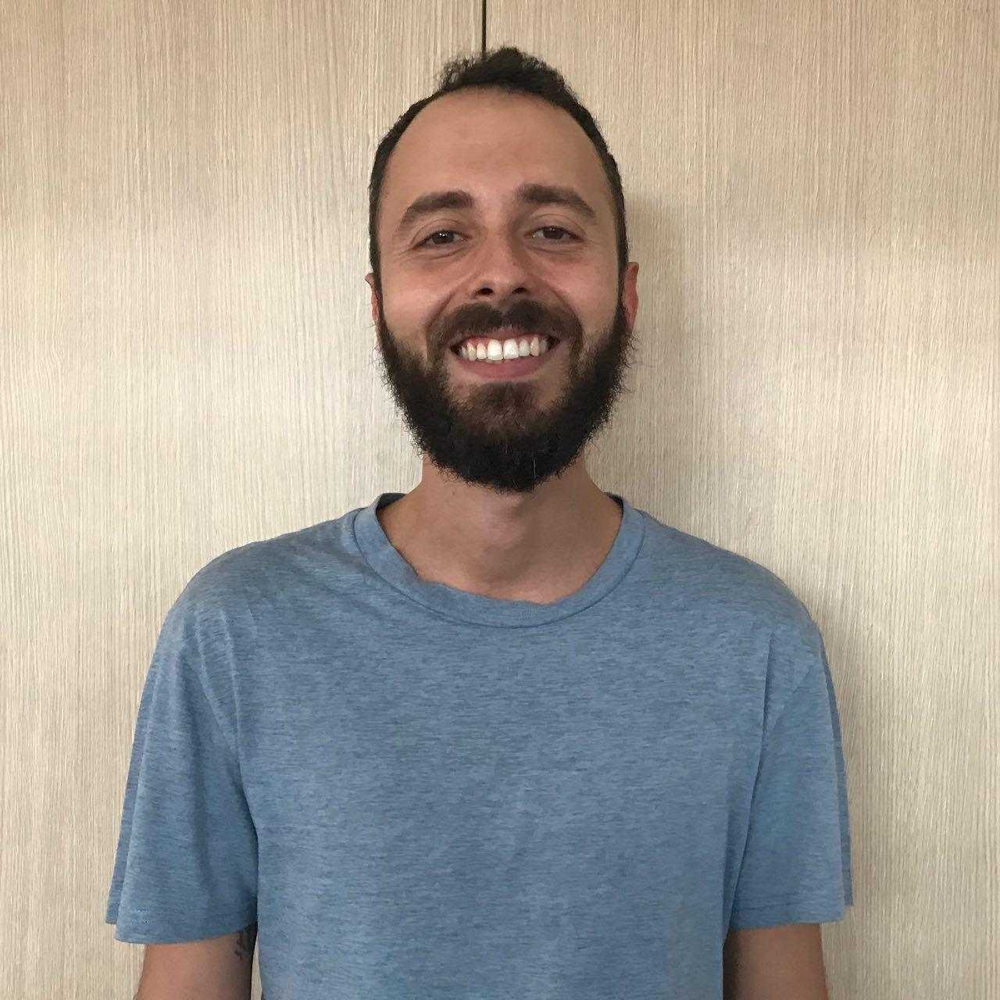

Richiesta tesi
Tutti gli appuntamenti devono essere richiesti mediante gli appositi collegamenti presenti in fondo a questa pagina.
Ricevimenti
Tutti gli appuntamenti devono essere richiesti mediante gli appositi collegamenti presenti in fondo a questa pagina.
Idoneità di Fondamenti di Informatica
Tutti gli appuntamenti devono essere richiesti mediante gli appositi collegamenti presenti in fondo a questa pagina.Vito Walter Anelli

vitowalter.anelli@poliba.it
Vito Bellini

vito.bellini@poliba.it
Giovanni Maria Biancofiore
giovannimaria.biancofiore@poliba.it
Yashar Deldjoo

yashar.deldjoo@poliba.it
Tommaso Di Noia

tommaso.dinoia@poliba.it
Antonio Ferrara

antonio.ferrara@poliba.it
Giulio Mallardi

giulio.mallardi@poliba.it
Felice Antonio Merra

felice.merra@poliba.it
Gaetano Pernisco
gaetano.pernisco@studenti.unipr.it
Claudio Pomo

claudio.pomo@poliba.it